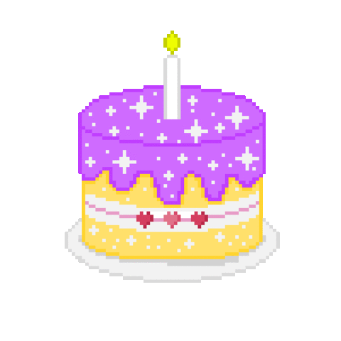

С днем рождения, Стася Андреевна!
Сегодня, в эту прекрасную загадочную ночь, равно 22 года назад, далекого 1998 года, появилась на свет самая прекрасная девушка по имени Стася 👩🏼
Эту дату, я называю по-простому: гуси- лебеди 🦆🦢, потому что она запоминается на всю оставшуюся жизнь. Вроде немного, а уже и немало, столько всяких преград позади.
Дорогая Стася Андреевна! Поздравляю тебя с днем рождения!
От чистого сердца, от всей души хочу пожелать тебе:
- В первую очередь, крепкого женского здоровья. Без здоровья в наше непростое время никуда, особенно здесь и сейчас 😷
- Крепкого семейного счастья. Люби и будь любима 💜
- Удачи во всех твоих начинаниях, как малых, так и больших. Чтобы твои таланты только преумножались и не остыло сердце к любимому делу никогда 🔥
- Чтобы в твоей жизни были только яркие и насыщенные дни и никогда не было печали на душе ☀️🌈
- Также хочу пожелать, чтобы тебя окружали только порядочные добрые люди, и ни одна мерзкая тетка и ни один пьяный дядька не смел испортить тебе настроение 🙅🏼♀
Всегда твой, Кирилл Саныч 🍄